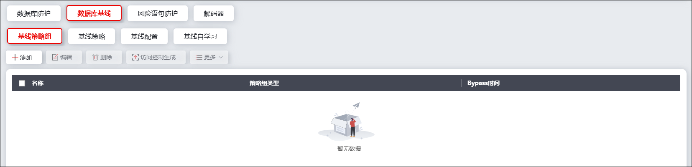
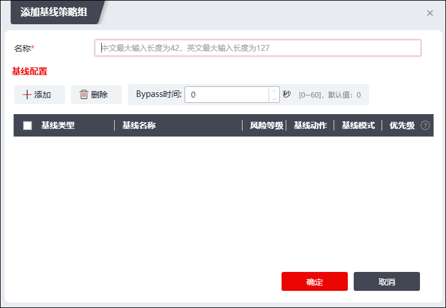
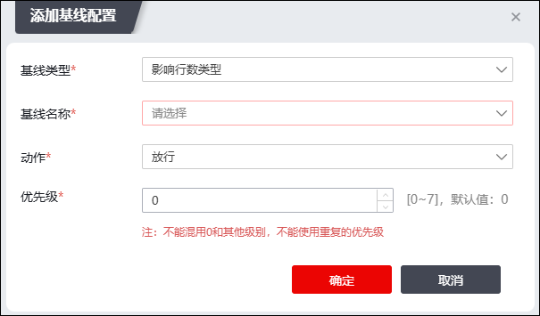

NGFW支持配置基线策略组，通过引用基线策略配置达到对数据库行为进行基线控制的目的。
配置基线策略组的详细操作如下。
| 步骤1 | 选择 ，激活“数据库基线”下的“基线策略组”页签，界面如下图所示。 |

| 步骤2 | 点击“添加”，弹出窗口界面如下图所示。 |

点击该界面中的“添加”，弹出的“添加基线配置”窗口界面如下图所示。

在进行基线配置时，各项参数的具体说明如下表所示。
参数 |
说明 |
|---|---|
基线类型 |
选择该基线策略限定的基线类型，可选项：登录请求类型、SELECT请求类型、DELETE请求类型、执行成功类型、执行失败类型、返回行数类型和影响行数类型。 |
基线名称 |
在下拉框中选择基线配置使用的基线对象，关于配置基线对象的操作，请参见 基线策略。 |
动作 |
选择NGFW对超出基线阈值的数据库行为执行的操作，可选项：放行、阻断和告警。 说明： 放行：NGFW对触发基线策略的行为进行放行； 阻断：NGFW对触发基线策略的行为进行阻断； 告警：NGFW对触发基线策略的行为进行放行，并记录告警日志。 |
优先级 |
配置该条基线策略的优先级，取值范围：0-7。数字越大，代表优先级越高。 |
配置完成后，点击【确定】保存该条基线配置。一个基线策略组最多可支持添加7个不同基线类型的基线策略（一个基线策略组不支持添加多个同类型基线策略）。
管理员还可以在基线配置界面配置bypass时间（即动态白名单的老化时间），配置完成后点击【确定】完成基线策略组的配置。
| 步骤3 | 生成防护策略 |
基线策略组分为两类，分别为自学习类策略和管理员类策略，其中管理员类策略指的是手动配置的基线策组略，自学习类策略是 基线自学习 模块下发过来的策略。针对于自学习类基线策略组，NGFW支持根据策略内容生成访问控制策略进一步保护数据库。
选中根据基线自学习功能自动生成的基线策略组，点击界面上方的“访问控制生成”，会弹出访问策略生成窗口；此时部分内容已经由NGFW根据基线策略组策略自动生成，管理员只需进行进一步配置，即可完成对应的访问控制策略。